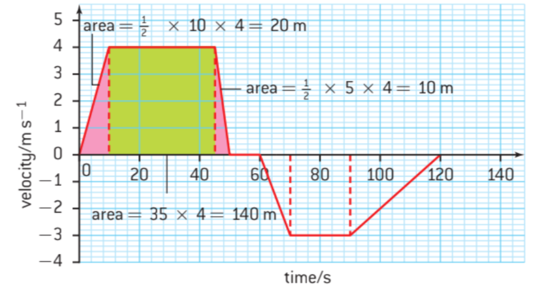
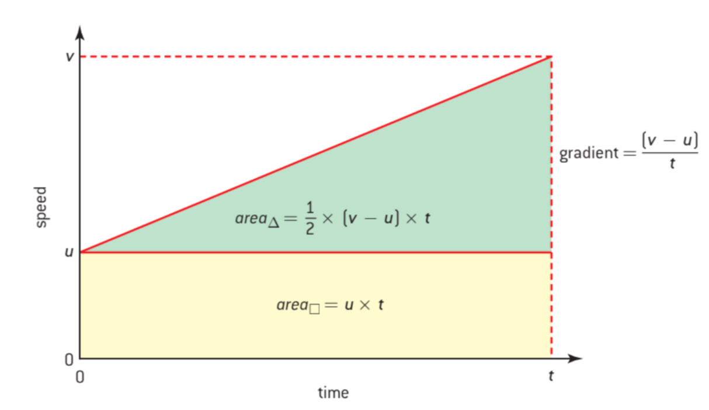
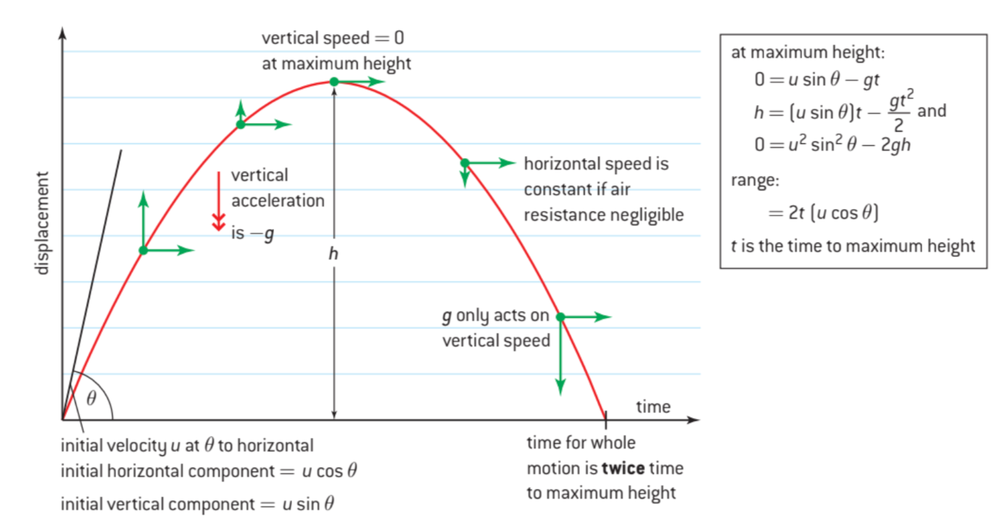
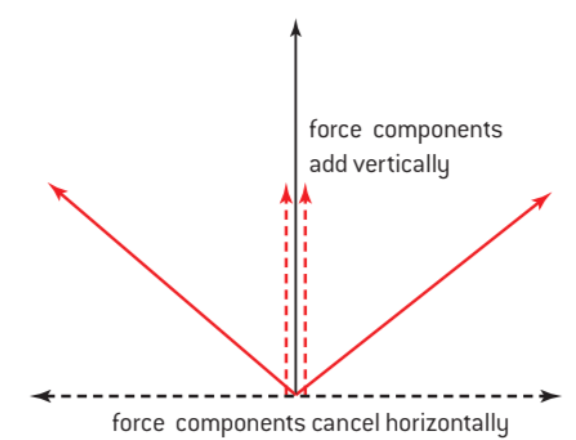
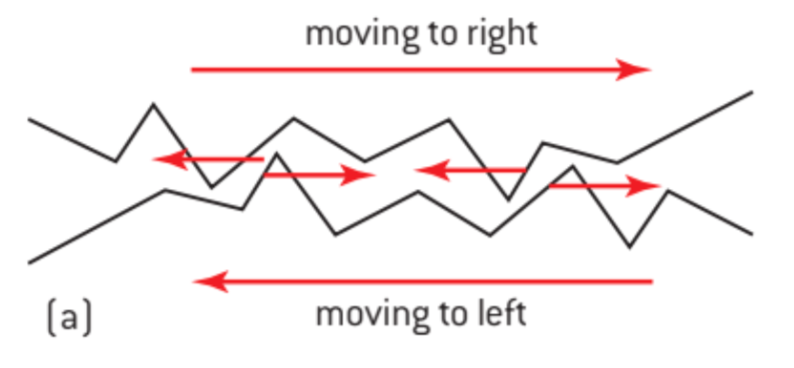
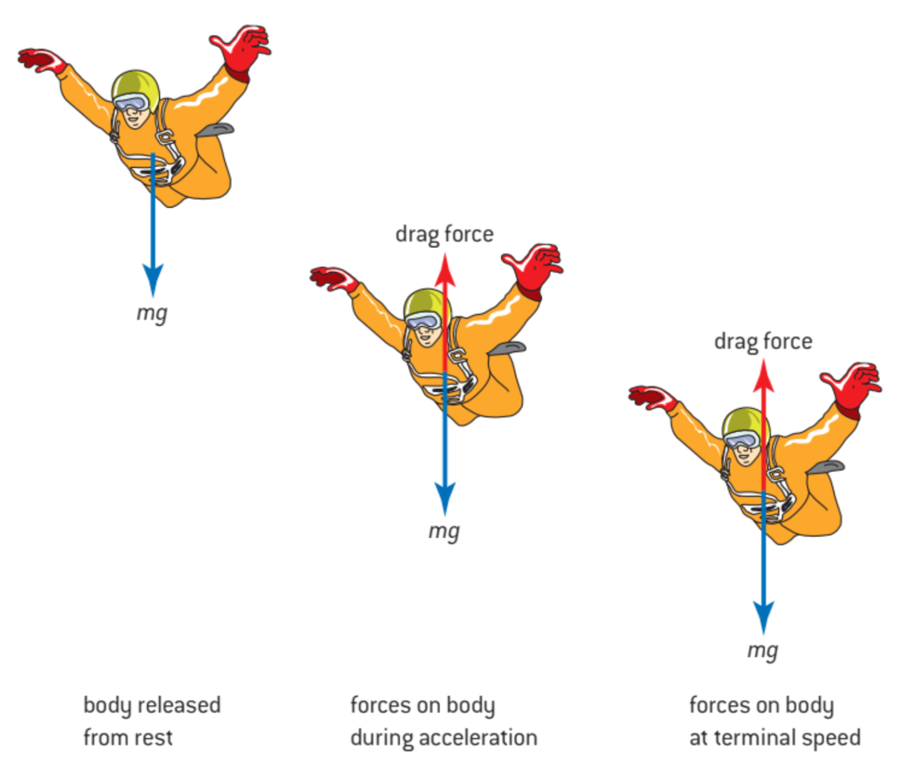
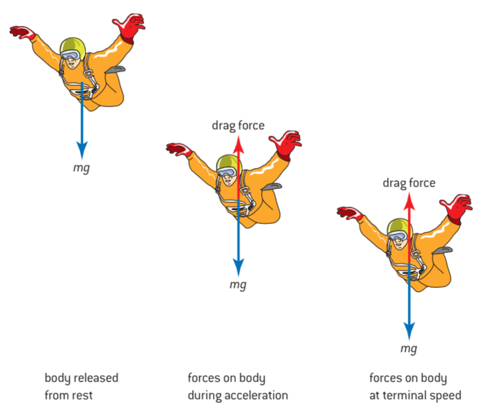
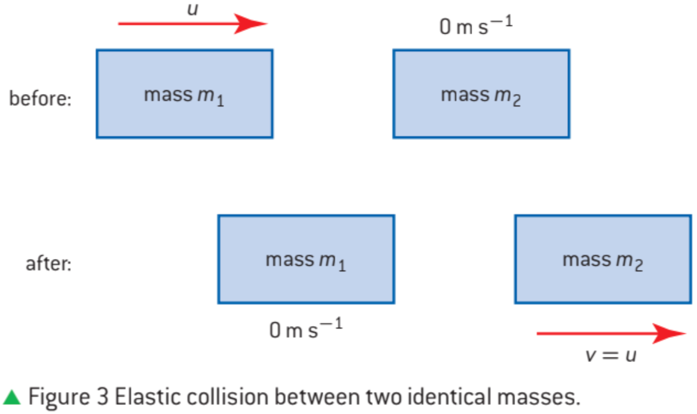

Todo se mueve. La tierra orbita alreador del sol y el sol orbita dentro de la via láctea. Esta unidad introduce como estudiar la mocion de estos objetos con la fisica.

Definimos la rapidez como el cambio de displacamiento en terminos del tiempo. La rapidez instantania es el gradiente de una grafica displacamiento-tiempo. Esto es la rapidez en un momento especifico. Se puede escribir como $\frac{ds}{dt}$. $\frac{\Delta s}{\Delta t}$ es una medida de la rapidez media.
Acceleración se mide en $ms^{-2}$ y se puede describir como $\frac{\Delta v}{\Delta t}$ y $\frac{dv}{dt}$.
$$a=\frac{v-u}{t}$$
La area de una curva de una grafica velocidad-tiempo se puede medir como $v \times t = s$
Son ecuaciones para acceleración constante.
| Symbolo | Cantidad |
|---|---|
| s | displacamiento / distancia |
| u | velocidad inicial |
| v | velocidad |
| a | acceleración |
| t | tiempo |
Reorganizando la definicion de la acceleración sacamos
$$v=u+at$$
De la grafica, sacamos que la area del rectangulo es $u \times t$ y del triangulo es $\frac{1}{2} \times (v-u)t$. Asi que, la area total $s$ es
$$s=ut+\frac{1}{2}at^2$$
De la primera ecuacion puedemos sacar que $t=\frac{v-u}{a}$. Metiendo este valor en la segunda ecuacion.
$$s=\frac{u(v-u)}{a}+\frac{1}{2a}(v-u)^2$$
$$as=uv-u^2+\frac{v^2}{2}-\frac{2uv}{2}+\frac{u^2}{2}$$
$$2as=v^2-u^2$$
Asi que nuestra tercera ecuacion es:
$$v^2=u^2+2as$$
Y la cuarta ecuacion se puede obtener logicamente como:
$$s=(\frac{v+u}{2})t$$
$g$ es la acceleración por la gravidad en la tierra. La acceleración cambia significativamente dependiendo de donde estas en la tierra. Por ejemplo, en Kuala Lampur, $g=9,776 ms^{-2}$ y en Stockholm, $g=9,818 ms^{-2}$
En esta unidad, para arriba es la direccion positiva. Asi que, como la acceleracion de gravidad va para abajo, $g$ tiene un signo negativo. Aqui hay las ecuaciones cinematicas reflejando esto para describir el movimiento vertical hasta el punto maximo.
$$0=u-gt$$
$$h=ut-\frac{1}{2}gt^2$$
$$0=u^2-2gh$$
Si quieres averiguar el tiempo para el movimiento total (al punto maximo y de vuelta a la tierra) tiene que ser $2t$
Asumimos que la tierra es sufficientemente grande que se puede considera plana y que no hay fricción. Gravidad actua solo verticalmente asi que la acceleracion horizontal es 0 y para sacar el movimiento podemos sumar el movimiento vertical y horizontal y tratarlos como valores independientes.
| Leyes | Definicion |
|---|---|
| Primera Ley | Un objeto continua esta estacionario o moverse a velocidad constante a no ser que actua una fuerza externa sobre el. |
| Segunda Ley | $F=m \times a$; $F$ se mide en newtons ($N$) que se puede representar como $kgms^{-2}$; masa es un escalar |
| Tercera Ley | Cada acción tiene una reacción igual y opuesta. Esto refiere a fuerzas. |
Midamos el caso de una bola en una mesa; hay una fuerza gravitacional en la bola para abajo. Asi que por la tercera ley de Newton habra una fuerza de reaccion. La bola deforma los atomos de la mesa muy ligeramente. Quita la bola y la mesa vuelva a ser plana. Hay una fuerza electrostatica entre los atomos que es la fuerza de reaccion.
Un objeto esta en equilibrio traslacional cuando no se mueve o esta a una velocidad constante. Por la primera y segundas leyes de Newton, esto significa que $F=0$
Rozamiento estatica: no hay movimiento relativo entre las superficies
Rozamiento dinamica: cuando si hay movimiento relativo
El rozamiento occure porque superficies planas no son planas al nivel atomico. Los picos y las valles de los dos superficies se enlacen entre si y se necesita fuerza para de-enlazar las. Un lubricante llena las valles de una superficie y reducen friccion.
El valor de la friccion estatica se puede sacar usando:
$$F_f \le \mu_s R$$
donde $F_f$ es la fuerza friccional ejercido por la superficie en el objeto. $R$ es la reaccion normal de la superficie en el bloque. Esto iguala el peso del bloque por que no hay acceleracion vetical. El simbolo $\mu_s$ es coefficiente de rozamiento estatica.
$$F_f = \mu_d R$$
Los coefficientes de rozamiento dependen de el par de superficies. Tambien es posible que el coeficiente de rozamiento sea mayor que 1 para algunas pares de superficies. Esto ocurre cuando la friccion es muy fuerte y mayor que el peso del bloque.
Algunas veces resistencia del fluido es una variable significativa. Hay una fuerza de arrastre. Hay un punto donde la fuerza de arrastre es igual a la fuerza creada por la gravedad - esto ocurre en la velocidad terminal.
 

Energia se puede convertir de una forma de energia a otro. Usamos la unidad de joule (J) para energia.
| Joule | Un joule es la energia requerido cuando una fuerza de 1 newton actua sobre una distancia de 1 metro. |
El principio de conservacion de energia dice que energia no se puede crear ni destruir. En otras partes de fisica, otras unidades se usan por ejemplo el electronvoltio.
trabajo (en J) = fuerza (en N) $\times$ distancia en la direccion de la fuerza (en m)
Cuando un peso de $5 N$ se mueve verticalmente 150 m entonces el trabajo sera $5 \times 150 = 750 J$
$$W=F\cdot s$$
| Poder | tasa de trabajo; $\frac{\text{energia}}{\text{tiempo}}$ |
Se mide el poder en watts (W); un watt es $1 Js^{-1}$
$$P=\frac{\text{trabajo}}{t}=\frac{Fs}{t}$$
$$P=Fv$$
$$E_c=\frac{1}{2}m(v^2-u^2)$$
$$E_p = mg \times \Delta h$$
Ley de Hooke: $F=k\Delta x$ donde $k$ es el constante elastico.
$$E_p = \frac{1}{2}k(\Delta x)^2$$
Eficiencia = $\frac{\text{trabajo util fuera}}{\text{energia total dentro}}$
Se define como
$$p = m \times v$$
| impulso es masa por velocidad nunca masa por rapidez |
| impulso es un vector |
| tiene unidades de $kgms^{-1}$ |
El impulso es constante si no hay fuerzas externas. Esto se conoce como el principio de conservacion de impulso linear.
Esto se conoce como energia elastica.
El primer objeto choca con el segundo objeto. El primer objeto se para y segundo sigue con la velocidad de la primera.
Por la conservacion de impulso, $m_1u=m_2v$
$m_1=m_2$ entonces $u=v$.
Otra vez,
$$m_1u_1+m_2u_2=m_1v_1+m_2v_2$$
Tambien, la energia cinetica se tiene que conservar.
Se tiene que hacer problemas de choques????
Esto es una collision inelastica. Esta vez la ecuacion del impulso es:
$$m_1u_1=(m_1+m_2)v_1$$
Mida si hay problemas sobre esto
Mida que se tiene que saber
Existe una relacion entre la energia cinetica y el impulso.
$$E_c = \frac{p^2}{2m}$$
Tambien se nota que podemos reescribr la segunda ley de Newton usando el impulso como:
$$F=\frac{\Delta p}{\Delta t}$$
Usando $F=ma$ y $F=\frac{\Delta p}{\Delta t}$, sacamos
$$F=m\frac{\Delta v}{\Delta t} + v\frac{\Delta m}{\Delta t}$$